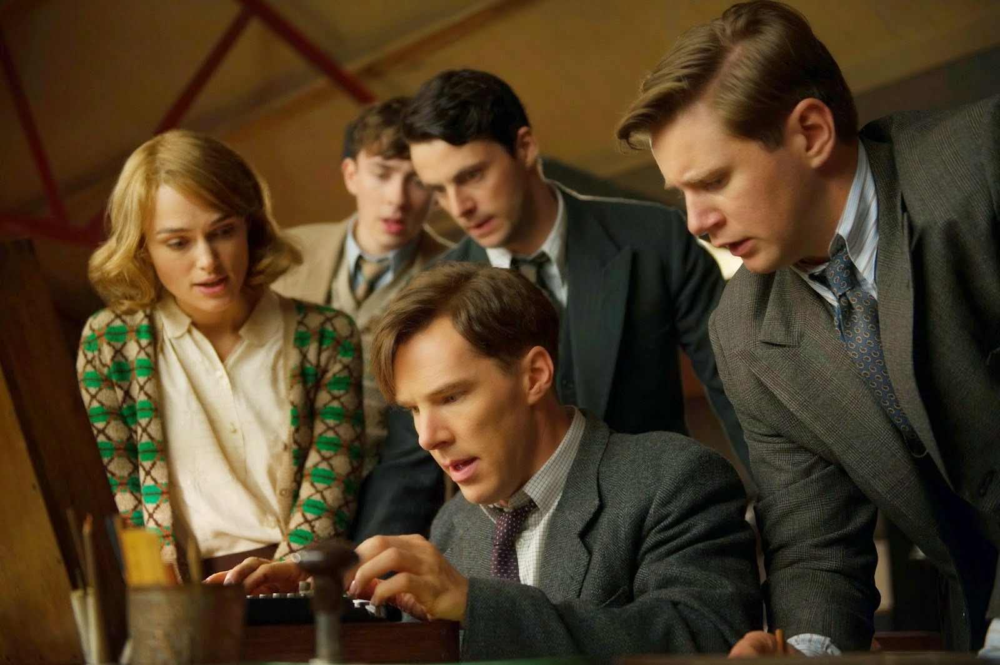
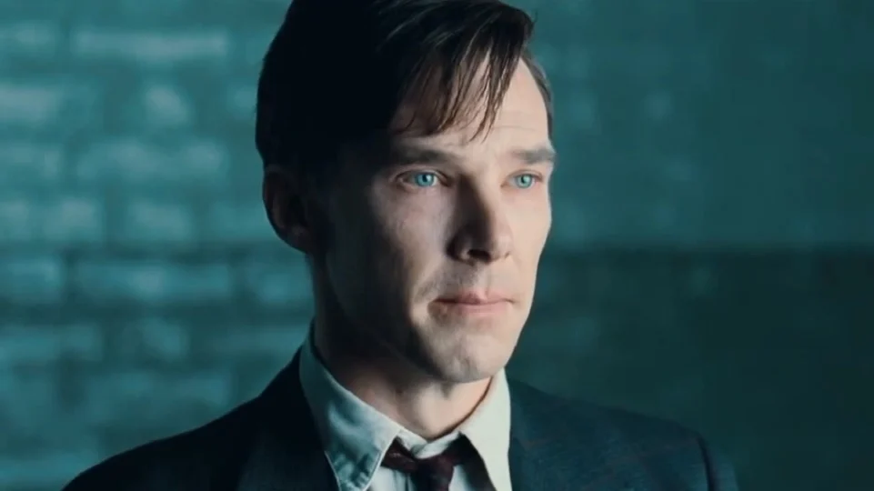
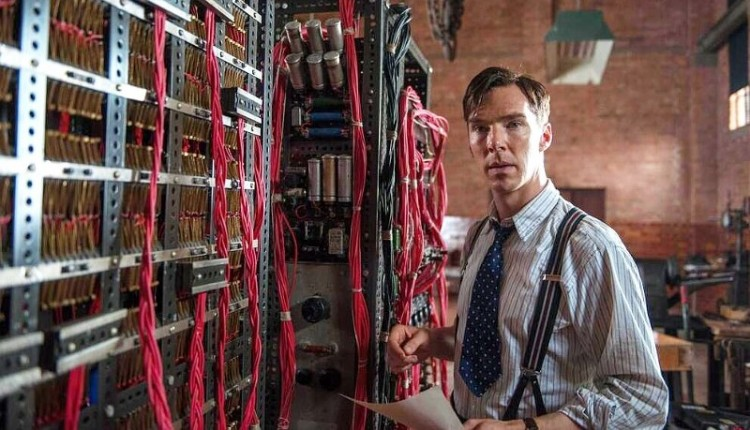
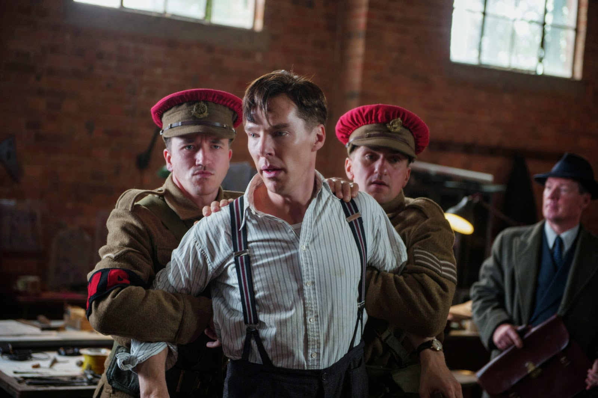

The Imitation Game (para português: O Jogo da Imitação) é um filme britano-estadunidense de 2014,
dos gêneros suspense e drama histórico-biográfico, dirigido por Morten Tyldum, com roteiro de Graham
Moore baseado no livro biográfico Alan Turing: The Enigma, de Andrew Hodges, por sua vez inspirado
na vida do criptoanalista britânico Alan Turing.
Durante a Segunda Guerra Mundial, o governo britânico monta uma equipe que tem por objetivo quebrar
o Enigma, o famoso código que os alemães usam para enviar mensagens aos submarinos. Um de seus
integrantes é Alan Turing (Benedict Cumberbatch), um matemático de 27 anos estritamente lógico e
focado no trabalho, que tem problemas de relacionamento com praticamente todos à sua volta. Não
demora muito para que Turing, apesar de sua intransigência, lidere a equipe. Seu grande projeto é
construir uma máquina que permita analisar todas as possibilidades de codificação do Enigma em
apenas 18 horas, de forma que os ingleses conheçam as ordens enviadas antes que elas sejam
executadas.

Imagem do Alan Turing e sua equipe com a maquina para desvendamento do Enigma.
fonte
da imagem: ConversaCult,
desenvolvido por Ana Luíza Albacete e Elilyan Andrade
Um breve resumo do filme, o
Jogo da Imitação - Alan Turing:
O filme "O Jogo de Imitação" trata da vida do considerado "Pai da Computação": Alan Turing. Baseado
na vida do matemático e cientista da computação, Alan Turing foi desconsiderado por muito anos da
história da computação, já que no final da vida foi submetido à uma castração química por causa da
constatação de atos homossexuais, que era considerado crime punível com prisão no Reino Unido, em
meados de 1952.
A narrativa traça o paralelo do momento histórico e a vida de Alan Turing. Ele teve sua genialidade
matemática constatada desde muito cedo, e, por consequência da personalidade mais introvertida e
hábitos perfeccionistas, sofreu bullying por grande parte da sua vida acadêmica. Já formado em uma
das melhores academias da época, decide se oferecer para trabalhar para o governo, que tentava
vencer a máquina alemã Enigma, responsável por codificar mensagens alemãs que acabavam por trazer
aos inimigos uma superioridade na guerra.

Imagem de Alan Turing pensativo.
Fonte:
Adoro Cinema,
Postagem da Imagem: 9 de Setembro de 2014.
Por fim, a Enigma é um espetáculo a parte. Inúmeros códigos chegam a rede de informações britânica
por meio de sinais de rádio, mas todos os dias há a frustração de ter que considerar inúmeras
variáveis nos cálculos matemáticos, levando a todos a crer que é impossível vencer essa máquina.
Alan pretende dar um passo maior que os demais, considerando seus conhecimentos na área de
computação, e decide que era hora de vencer uma máquina com uma oponente a altura: outra máquina.
O computador nasceu como máquinas gigantes usadas para cálculos matemáticos e precisavam de muita
energia e hardwares (a parte física do computador) maiores para trabalhar. Foi somente anos depois
que o computador se tornou o nosso PC (Computador Pessoal), tendo diminuído de tamanho e ganhado
funcionalidade muito interessantes.

Imagem de Alan Turing com os equipamentos para desvendamento do Enigma.
Fonte:
Coisa De Cinéfilo -
WANDERLEY TEIXEIRA, Data de Postagem: 5 de Fevereiro de 2015
"O Jogo da Imitação" é um filme envolvente que retrata a vida notável de Alan Turing, um brilhante
matemático e pioneiro da computação. No centro da trama está a Máquina Enigma, uma invenção crucial
da Segunda Guerra Mundial utilizada pelos nazistas para cifrar mensagens. A genialidade de Turing e
sua equipe na decifração da Enigma revela-se uma virada histórica, acelerando o fim da guerra. Sua
abordagem inovadora envolveu a aplicação de princípios de análise combinatória para quebrar os
códigos, marcando um marco significativo na história da computação. O filme destaca não apenas as
realizações técnicas de Turing, mas também seu papel essencial na fundação da inteligência
artificial, através do conceito do famoso teste de Turing, que questiona a capacidade de uma máquina
imitar o pensamento humano de maneira indistinguível.
Ao explorar as complexidades da vida de Alan Turing, "O Jogo da Imitação" oferece uma visão
aprofundada sobre a genialidade e as lutas pessoais do cientista. O filme destaca a ironia da vida
de Turing, que apesar de suas contribuições extraordinárias, enfrentou perseguição devido a sua
orientação sexual. Sua história ressalta não apenas os avanços revolucionários na computação e
inteligência artificial, mas também a importância de reconhecer e respeitar a diversidade e a
singularidade de cada indivíduo. "O Jogo da Imitação" serve como um tributo tocante a Turing, cujo
trabalho pioneiro continua a impactar profundamente o mundo da tecnologia e da ciência da
computação.

Imagem de Alan Turing, sendo levado por policiais por infringir uma regra.
Fonte:
Profissão
Cinéfilo, Data de postagem: 26 de Janeiro de 2015.